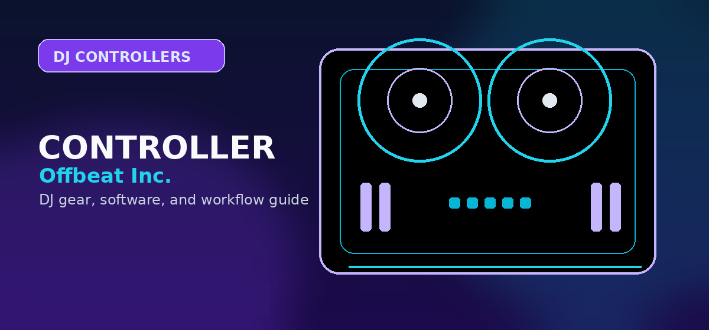

Best Budget DJ Equipment Under $500: Top Beginner Controllers & Mixers for 2026
Comprehensive guide to best budget DJ equipment under 500 dollars beginner controller mixer 2026 with practical recommendations and current buying notes — updated 2026.

Disclosure: This page uses affiliate links. We may earn a commission at no extra cost to you. Full disclosure →
Entering the DJ world in 2026 is more accessible than ever. Gone are the days when you needed thousands of dollars in vinyl and heavy mixers to get a professional sound. Today, the "budget" sector—specifically gear under $500—has matured, absorbing pro-level features like touch-capacitive jog wheels, integrated high-fidelity audio interfaces, and seamless software integration. For a beginner, the goal isn't to buy the most expensive gear, but to find a setup that teaches the fundamentals of phrasing, beatmatching, and EQing without a steep financial barrier. Whether you are aiming for bedroom hobbyist status or planning to play your first local club gig, the right entry-level controller can bridge the gap between a laptop and a dancefloor, providing the tactile feedback necessary to develop true DJ instincts.
The Evolution of Beginner DJ Controllers
In 2026, the line between "entry-level" and "mid-range" has blurred. Modern beginner controllers now act as complete ecosystems, combining a two-channel mixer with digital turntables. The biggest shift has been the integration of AI-assisted learning tools and improved build quality. We are seeing more controllers with rubberized grips and reinforced faders that can withstand the energy of a live set. Furthermore, the shift toward "software agnostic" hardware means you aren't locked into one ecosystem; many top budget units now toggle between Rekordbox, Serato, and Virtual DJ with a single switch. This flexibility allows beginners to experiment with different workflows before committing to a professional software suite, ensuring your hardware investment lasts as your skills evolve.
Top Pick: Pioneer DJ DDJ-FLX4
The Pioneer DJ DDJ-FLX4 remains the gold standard for beginners for a reason. It mirrors the layout of professional club-standard CDJs and DJMs, meaning the skills you learn here transfer directly to the booth. In 2026, the FLX4 continues to dominate due to its "Smart CFX" and "Smart Fader" features, which help novices execute seamless transitions while they are still mastering beatmatching. It is lightweight, USB-C powered, and integrates perfectly with Rekordbox and Serato. While the chassis is primarily plastic, the layout is intuitive and the jog wheels are responsive. It is the safest investment for any beginner because of its immense community support and high resale value.
The Tactile Choice: Hercules DJControl Inpulse 500
For those who want a more "hands-on" feel, the Hercules DJControl Inpulse 500 is a powerhouse. It distinguishes itself with a robust build and a dedicated "Beatmatch Guide"—a series of light-up cues that visually instruct the DJ on which way to nudge the jog wheel to sync tracks. This removes the guesswork and accelerates the learning curve significantly. The Inpulse 500 offers a more tactile experience than the FLX4, with larger knobs and a more substantial mixer section. While its software ecosystem is slightly smaller than Pioneer's, it provides a more physical, "analog" feel that many beginners prefer when transitioning away from purely mouse-and-keyboard DJing.
Balancing the Budget: Headphones and Monitors
A $500 budget allows you to look beyond the controller. A controller is useless if you can't hear your "cue" track or if your output sounds muddy. To stay under budget, pair your controller with the Audio-Technica ATH-M20x headphones; they provide the necessary isolation and clear frequency response for beatmatching without breaking the bank. For sound output, a pair of PreSonus Eris 3.5 studio monitors is the ideal companion. Unlike consumer speakers, these provide a flat frequency response, allowing you to hear exactly how your mix sounds without artificial bass boosting. Investing in these basics ensures that your learning environment is accurate and that you aren't masking mistakes with low-quality audio gear.
Budget DJ Gear Comparison 2026
| Model | Est. Price | Best For | Key Feature | Pros | Cons |
|---|---|---|---|---|---|
| Pioneer DDJ-FLX4 | $299 | Career Aspirants | Club-Standard Layout | Industry Sync, Easy Setup | Plastic Build |
| Hercules Inpulse 500 | $329 | Rapid Learners | Beatmatch Guide | Sturdy Build, Great Cues | Limited Software |
| Numark Mixtrack Platinum FX | $279 | Performance/FX | Display in Jog Wheels | High Visibility, Great FX | Bulkier Design |
| Traktor Kontrol S2 | $349 | Tech-Heavy DJs | Deep Software Integration | Precision Faders, Stable | Steeper Learning Curve |
Budget Breakdown: How to Allocate Your $500
Smart budget allocation is crucial when buying DJ equipment. Here's a recommended breakdown: allocate $200-$350 for a controller, $50-$100 for headphones, $80-$120 for studio monitors, and save $20-$50 for cables, adapters, and a protective case. This distribution ensures balanced audio quality across all three critical areas: control (controller), cue monitoring (headphones), and output listening (monitors). Many beginners make the mistake of spending $400 on the fanciest controller and then using dollar-store headphones and a laptop speaker, which leads to poor mix quality and a frustrating learning experience. Prioritize the complete setup, not just the headline gear.
Common Beginner Mistakes to Avoid
First mistake: buying a MIDI keyboard controller instead of a DJ controller. MIDI keyboards are great for music production but don't have the jog wheels and mixer sections you need for DJing. Second mistake: underestimating the importance of headphones. Poor headphone isolation makes beatmatching nearly impossible because you can't hear the incoming track clearly. Third mistake: connecting your controller directly to laptop speakers. Budget DJ monitors (PreSonus Eris, Yamaha HS5) cost $80-$120 but make an enormous difference in mix quality and learning accuracy. Fourth mistake: assuming more buttons and features equal better performance. Simplicity is your friend as a beginner—master a two-channel controller with basic EQ and effects before moving to multi-channel rigs with advanced filters.
The Upgrade Path: Growing Into Professional Gear
Your $500 budget setup isn't the end of the line—it's the beginning. After 3-6 months of regular practice, you'll understand which aspects of DJing attract you most. If you love turntablism and scratching, you might upgrade to a Technics 1200 and mixer. If you prefer software stability and precise syncing, you'll evolve toward Rekordbox and Pioneer's mid-range controllers like the DDJ-800. The beauty of budget gear is that it's not wasted money; most controllers hold 60-70% of their resale value if purchased from major retailers. Sell your entry-level setup after you've mastered the fundamentals, and use the proceeds plus additional savings toward your $1,000-$1,500 step-up controller. This staged approach is far smarter than overspending upfront on professional gear you don't yet understand.
Software Ecosystem: Which Controller for Which Platform?
Not all budget controllers work equally well with all software. The Pioneer DDJ-FLX4 is optimized for Rekordbox (Pioneer's platform) but also works with Serato. The Hercules Inpulse 500 is optimized for Serato but can toggle to VirtualDJ. The Numark Mixtrack series works natively with VirtualDJ and Serato. If you know which software ecosystem you want to enter—perhaps because your local club uses Rekordbox, or your mentor uses Serato—align your hardware choice accordingly. That said, modern controllers are increasingly "software agnostic," meaning they work seamlessly across multiple platforms via USB. Verify compatibility before purchasing, but don't let it paralyze your decision; you can always learn a second platform later as your skills develop.
Future-Proofing Your Investment
The worst feeling is buying equipment that becomes obsolete within a year. The good news is that under-$500 controllers from major brands (Pioneer, Hercules, Numark, Native Instruments) have strong resale values and long support lifespans. For example, the Pioneer DDJ-400 (released 2017) still has full driver support and is actively traded on the secondhand market. Before buying, check manufacturer support timelines and community forums to confirm a controller has at least 5+ years of active development ahead. This ensures your $300 investment will feel fresh, not dated, when you're ready to upgrade.
The Reality of Learning Beatmatching
Beatmatching—syncing the tempos of two tracks—is the fundamental skill all DJs must master. Budget controllers with visual aids (like the Hercules Beatmatch Guide or Numark jog wheel displays) are genuinely helpful for accelerating the learning curve, but they aren't shortcuts. Expect 2-4 weeks of daily practice before you can beatmatch by ear without visual aids. Conversely, some experienced DJs swear by controllers with minimal features because the challenge of manual beatmatching builds a stronger instinctual feel. Neither approach is "wrong"—the visual aids get beginners confident faster, while minimal-feature setups force deeper learning. Choose based on your personality: do you want a supportive learning curve, or do you prefer a steeper challenge that builds stronger fundamentals?
Quick Verdict
- The "Safe Bet": Go with the Pioneer DJ DDJ-FLX4. It is the industry standard for a reason and offers the smoothest path to professional gear.
- The "Fast Track": Choose the Hercules Inpulse 500 if you want visual aids to help you master beatmatching faster.
- The "FX Lover": Opt for the Numark Mixtrack Platinum FX if you want a more dynamic, performance-oriented setup with integrated displays.
Ready to start your journey? Don't let gear hesitation hold you back from the booth. Check out our latest deals on these controllers and accessories via the affiliate links below to secure the best pricing for 2026!
Bottom line: For budget DJ gear in 2026, the Pioneer DDJ-400 offers the best balance of affordability and brand-standard features. Pair with Audio-Technica ATH-S100DJ headphones for a complete setup under $350. Check the DDJ-400 on Amazon →
Shop on Amazon
Find budget DJ equipment on Amazon — controllers from $50 to $300.
Also on zZounds
Flexible financing · No credit check · 45-day price guarantee.
Frequently Asked Questions
What is the minimum budget to start DJing?
You can start DJing with around $150–$300. The Hercules DJControl Starlight or Pioneer DDJ-200 are great entry-level controllers. Add free software like VirtualDJ or Rekordbox and you're ready.
Can I DJ with just a laptop?
Yes, but you'll need at least a basic controller for a physical feel. Laptop-only DJing with Traktor or Serato DJ Lite is possible but limited by mouse control accuracy.
Is a $200 DJ controller good enough for a beginner?
Absolutely. Controllers like the Pioneer DDJ-200 or Hercules DJControl Inpulse 300 offer everything a beginner needs — two decks, EQ, effects, and cue buttons.
What budget DJ equipment do professionals recommend for beginners?
The Pioneer DDJ-400 (~$299) and Numark Mixtrack Pro FX (~$199) are the most recommended beginner setups. Both include software licenses and tutorial resources.
Do I need headphones to DJ?
Yes. DJ headphones are essential for cueing and beatmatching. Budget options like the Audio-Technica ATH-M20x (~$49) or Pioneer HDJ-CUE1 (~$79) work well for beginners.